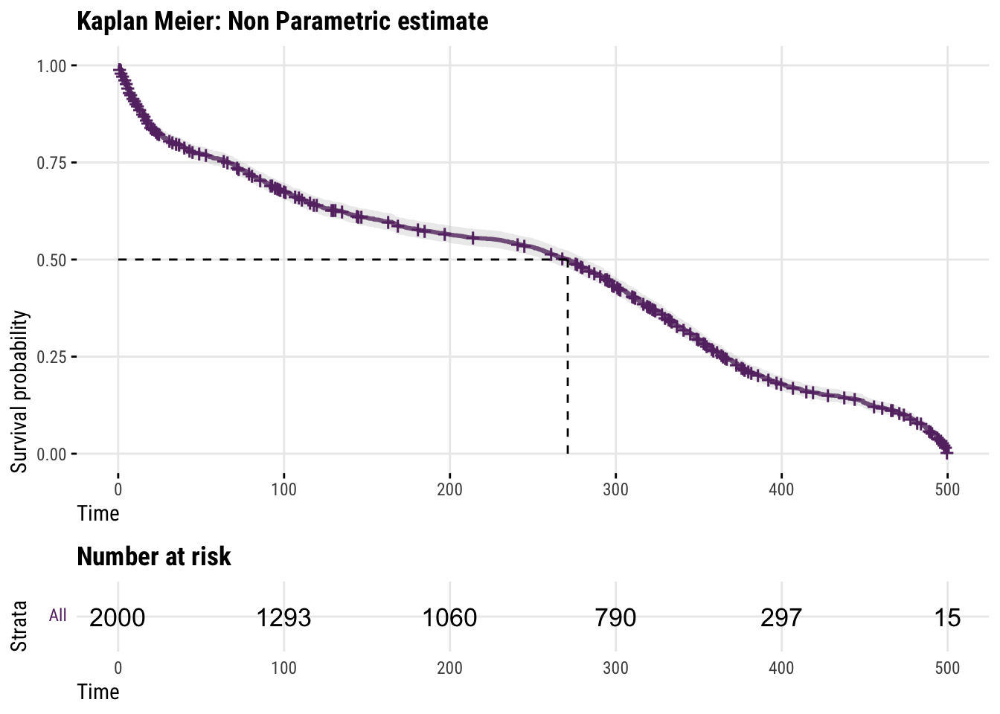
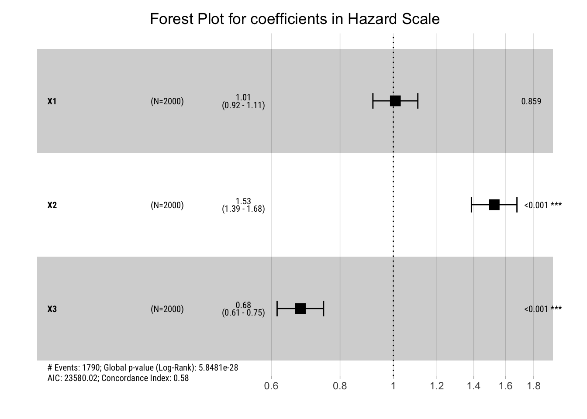

library(tidyverse)
library(survival)
library(coxed)
library(survminer)
# Colors from MetBrewer
clrs <- MetBrewer::met.brewer("Java")
# Taken from the excellent Andrew Heiss blogpost: https://www.andrewheiss.com/blog/
# Custom ggplot themes to make pretty plots
# Get Roboto Condensed at https://fonts.google.com/specimen/Roboto+Condensed
# Get Roboto Mono at https://fonts.google.com/specimen/Roboto+Mono
theme_pred <- function() {
theme_minimal(base_family = "Roboto Condensed") +
theme(panel.grid.minor = element_blank(),
plot.background = element_rect(fill = "white", color = NA),
plot.title = element_text(face = "bold"),
strip.text = element_text(face = "bold"),
strip.background = element_rect(fill = "grey80", color = NA),
axis.title.x = element_text(hjust = 0),
axis.title.y = element_text(hjust = 0),
legend.title = element_text(face = "bold"))
}
update_geom_defaults("text", list(family = "Roboto Condensed", lineheight = 1))Survival Analysis is fun, but not often taught in statistics courses. It’s just like regular statistics but with a few twists.
Survival Analysis is a branch of statistics that is used to study the time to an event of interest, such as death, disease, or failure. It is different from regular event models because it focuses on the time to the event and takes into account the fact that not all events may be observed. This is called censoring, and it is an important concept in Survival Analysis because it can affect the estimates of the time to the event.
One of the most common Survival models is the Cox Proportional Hazard model, which allows for the analysis of censored data and the estimation of the time to the event. In this blog post, we will go over the basic construction of the Cox model and how it deals with censoring and time. We will also provide an example to illustrate the concepts and show how the model can be applied in practice.
Time matters
Imagine you are trying to predict which are the customers most likely to churn in the next few months. Data Science practitioners will often end up doing some like this:
Use past customer data and create a binary target 0/1 for churn. Then, train a binary classification algorithm to predict risk churn from whatever independent features you have at your disposal. Your end result would be scalar risk predictions for each of your current customers.
How did we deal with time in the example above? Well, we just swept time under the rug: our target does not differentiate between someone who had been a regular customer for 2 years and someone who had only been a regular customer for 3 months; they are just a 0 in your target. The same happens for churned customers: churned in 6 months or in 6 days, they are just a 1 in your target.
In both cases, whether they churned or not, you threw away time and its relationship to your target: maybe someone has very high risk of churning in the first few months but then it plateaus, or someone has a constant medium risk of churn; nevertheless, your scalar prediction won’t have this kind of information and thus won’t be able to deal with these types of customers differently.
Survival Analysis aims to solve this problem: it’s useful when you care to predict if and when an event will happen. By predicting the time to the event, we can expand our risk predictions across time and act accordingly!
Undefined state: Censoring
Let’s continue with our Churn example. At the moment of creating the training dataset, we will have individuals who have not churned, but maybe that’s just an artifact of when we are observing them; maybe, they will churn tomorrow and the model would have incorrectly assumed that they are exemplary of customers who don’t churn.
To deal with these undefined states, Survival models have the concept of censored observations: observations for which we haven’t observed their end state yet. They should contribute to our model, just not as much as observations who have an end state defined. The clearest example is death: survival models are routinely used in medicine to predict time to death: if the patient has not died, it’s just a matter of time until they do (At the end, that’s the end for all phenomena: death, right?)
This undefined state called Censoring is what renders traditional statistical methods inappropriate: they are not like other observations, and they warrant a different treatment in our statistical machinery. Survival Models are exactly this type of models.
Cox Proportional Hazard and Survival Math
Let’s put what we just said to good use. We have records of events, but we want to differentiate the events depending on how long it took them to happen and we want to differentiate between censored and uncensored events.
Before we introduce the Cox Proportional Hazards model, let’s introduce some useful math notation.
Survival math
We are interested in the probability that event will happen as a function of time. There are three equivalent mathematical representations to model this time-to-event modeling:
The Survival Function: the probability that an event of interest will not occur up to a given time. Mathematically, we can define it thus: \(S(t) = 1 - F(t)\), where \(F(t)\) is the lifetime distribution function for the time to the event of interest, and \(f(t)\) being the event density. Thus, we can expand both mathematical representations thus \(S(t) = \Pr(T > t) = \int_t^{\infty} f(u)\,du = 1-F(t)\) and \(s(t) = S'(t) = \frac{d}{dt} S(t) = \frac{d}{dt} \int_t^{\infty} f(u)\,du = \frac{d}{dt} [1-F(t)] = -f(t)\).
The Hazard Rate: the instantaneous probability of an event of interest occurring at a given time, given that the event has not occurred up to that time. Mathematically: \(\lambda (t) = \lim_{dt \rightarrow 0} \frac{\Pr(t \leq T < t+dt)}{dt\cdot S(t)} = \frac{f(t)}{S(t)} = - \frac{S'(t)}{S(t)}\)
The Cumulative Hazard Rate: \(\Lambda(t) = \int_0^{t} \lambda(u)\,du = -\log S(t)\)
Sometimes, a given representation will be more useful than others. Crucially, they are all related thus:
\[ S(t) = \exp [ -\Lambda(t) ] = \frac{f(t)}{\lambda(t)} = 1-F(t), \quad t > 0 \] We see that with survival math, unlike regular binary classification algorithms, time to event is a first class citizen. Let’s see a particular instance of such model: the Cox Proportional Hazards model.
The Cox Proportional Hazards Model
Now that we’ve gotten some notation out of the way, let’s lay out the intuition and the math for the Cox Proportional Hazards Model.
To start with, we will model the hazard rate directly by separating the functional form into two parts: a baseline rate function that will vary exclusively with time \(h_0(t)\), and a risk function that will NOT vary with time but with whatever predictor variables we have \(r(X; \beta)\):
\[ h(t) = \underbrace{h_0(t)}_{\text{Depends on time}} \cdot \underbrace{r(X; \beta)}_{\text{Does not depend on time}} \]
Given that we want our risk function to always be positive, it’s useful instead to define the hazard rate in terms of the exponential of the risk function (\(r(X; \beta)\) is in the log hazard scale units, whereas \(\exp{(r(X; \beta)})\) is in the hazard scale units.):
\[ h(t) = \underbrace{h_0(t)}_{\text{Depends on time}} \cdot \underbrace{\exp{(r(X; \beta)})}_{\text{Does not depend on time}} \]
And that’s it. That’s the famous functional form for the Cox Proportional Hazards. Before we learn how to actually learn the parameters and the baseline rate function, let’s dive into why it’s called proportional.
Why the Proportional in the name? Constant hazard Ratios
The above functional form for the hazard rate means that the ratio in the hazard rate between two individuals with different covariate values will always be the same multiplicative constant, regardless of the values of the covariates. That is, the respective hazard ratios across time will always be a constant and the hazard curves cannot cross.
This implies that the hazard of an event in any group is a constant multiple of the hazard in any other group
Therefore, whenever we want to understand the predictions a Cox Proportional Hazard model makes we refer to this relative, constant hazard ratio that we will see when comparing differnt observation groups.
Mathematically, we can see it thus:
suppose that we have two individuals with covariates \(x_1\) and \(x_2\), and regression coefficients \(\beta_1\) and \(\beta_2\). The hazard rate for the first individual is given by:
\(h_1(t) = h_0(t) \cdot \exp(\beta_1 x_1 + \beta_2 x_2)\)
and the hazard rate for the second individual is given by:
\(h_2(t) = h_0(t) \cdot \exp(\beta_1 x_1' + \beta_2 x_2')\)
The ratio in the hazard rates for these two individuals is given by:
\[ \frac{h_1(t)}{h_2(t)} = \frac{h_0(t) \cdot \exp(\beta_1 x_1 + \beta_2 x_2)}{h_0(t) \cdot \exp(\beta_1 x_1' + \beta_2 x_2')} = \frac{\cdot \exp(\beta_1 x_1 + \beta_2 x_2)}{\exp(\beta_1 x_1' + \beta_2 x_2')} = \frac{h_1}{h_2} = \psi \]
This shows that the ratio in the hazard rates for these two individuals is always equal to a constant multiplicative factor, \(\psi\), which is determined by the differences in the covariate values and the regression coefficients, regardless of the survival time in question. This is true for any pair of individuals with different covariate values, so the ratio in the hazard rate between any two groups will always be the same multiplicative constant in the Cox Proportional Hazards model.
Constructing the Likelihood
Given a model, we can construct the likelihood that will describe the probability of observing what actually happend in our sample.
The key idea behind the construction will be that we can describe non-censored observations with the event density as we would regularly do, but that for Censored observations we will use the Survival function.
Why? For observations who actually experienced the event during the study, we know their defined state. We can thus describe their end state with the event density, \(f(t)\). Whereas for censored observation, their state is undefined at the moment of the study; the only thing we can say is that they have survived to their censored survival time, and that the chance of that happening is described by \(S(t)\).
Let’s \(c_i\) be an indicator variable indicating whether the observation is censored or not. For a single observation, we can describe the probability of observing it thus:
\[ [f(t, \beta, x)]^c \times[S(t, \beta, x)]^{1-c}, \] Assuming independence, the joint probability of observing the entire sample \(n\) is:
\[ \prod_{i=1}^n\left\{\left[f\left(t_i, \beta, x_i\right)\right]^{c_i} \times\left[S\left(t_i, \beta, x_i\right)\right]^{1-c_i}\right\} \]
If we replace the definition of the event density using our previously defined equations in Survival Math:
\[ \prod_{i=1}^n\left\{\left[\lambda(t_i, \beta, x_i) \cdot S\left(t_i, \beta, x_i\right)\right]]^{c_i} \times\left[S\left(t_i, \beta, x_i\right)\right]^{1-c_i}\right\} \] \[ \prod_{i=1}^n\left\{\left[\lambda(t_i, \beta, x_i) \right]^{c_i} \times\left[S\left(t_i, \beta, x_i\right)\right]\right\} \]
This means that the contribution of a non-censored observation to the loss function is the product of the hazard and survival functions at the time of the event. Whereas the contribution of a censored observation to the loss function is only the survival function at the time of censoring.
Intuitively, this means that censored observations have a smaller impact on the loss function than non-censored observations. This is because censored observations provide less information about the event of interest, so they are less useful for estimating the hazard and survival functions. As a result, the Cox model gives less weight to censored observations when estimating the coefficients.
Cox’s Partial (Profile) Likelihood
The above equation gives us a nice intuitive understanding of how the model works. However, the above requires to integrate over time to be able to derive the Survival Function and that would in turn require to specify a functional form for the Hazard Function for all possible event times, which is to ask a lot. We can simplify the problem if we instead assume that the baseline hazard is unknown.
How? The gist is that the baseline rate, \(h_0(t)\), is not of our interest; it’s a nuisance function. So we will consider it a fixed value and estimate the regression parameters first. To do so, we will separate the likelihood on that which depends on \(h_0\) and that which doesn’t.
\[\begin{aligned} L\left(\beta, h_0(\cdot)\right) &= \underbrace{L_1(\beta)}_{\text{function of } \beta, \text{ whose max converges to } \beta} \\ & \cdot \underbrace{L_2\left(\beta, h_0\right)}_{\text{contains little information about} \beta \text{only relevant for } h_0} \end{aligned}\]The process of doing so is tedious and not worth the trouble. If you are curious, for example, one of the most famous formulations is the Efron approximation.
Nevertheless, what’s important is that by performing maximum likelihood on the partial likelihood \(L_1(\beta)\) we can replicate the same regression parameters as if we were maximizing the full likelihood. That is, the maximum we find with the partial likelihood, \(\hat{\beta}\), converges to the original parameter, \(\beta\).
Fitting the model on simulated data
We will fit our first Cox model on simulated data. Let’s first load the required R packages:
Now let’s use the awesome coxed package to simulate sensible survival data thus:
A cohort with 2000 subjects, with a maximum follow-up time of 500 days. The true log hazard coefficients are 0, 0.4, and -0.4, respectively for X1, X2, X3.
# Set the seed for reproducibility
set.seed(1234)
simulated_betas <- c(0, 0.4, -0.4)
sim.data <- sim.survdata(N=2000, T=500, num.data.frames=1,
beta = simulated_betas)
data <- sim.data$data
sim.data$betas [,1]
[1,] 0.0
[2,] 0.4
[3,] -0.4Now that we have the data, it’s useful to fit a non-parametric estimator called the Kaplan Meier estimator.
Kaplan Meier Estimator
The Kaplan-Meier estimator estimates the survival probability of a population over time by calculating the proportion of individuals that have not experienced the event of interest at each time point.
The Kaplan Meier’s (consistent, unbiased and efficient) estimate Survival Curve will be a quick check to understand how the survival probabilities change across time in our sample.
# Fit a Kaplan-Meier estimator for each level of the covariate
fit <-
survminer::surv_fit(Surv(y, failed) ~ 1, data = data)
# Plot the Kaplan-Meier estimators
ggsurvplot(fit, ggtheme = theme_pred(), color = clrs[[1]],
surv.median.line = 'hv',
risk.table = TRUE,
conf.int = TRUE,
title = "Kaplan Meier: Non Parametric estimate"
)
We can see that there’s a huge non-linearity across time that the Kaplan Meier estimator correctly caputres!
Cox Proportional Hazard model
Fitting the model
Let’s finally fit our model!
Note that as long as the Cox Proportional Hazard assumptions are met (proportional hazards and we’ve correctly specified the linear regression in the risk function), the Cox model is consistent and asymptotically unbiased, meaning that the parameter estimates converge to the true values as the sample size increases.
cox_fit <- coxph(Surv(y, failed) ~ X1 + X2 + X3, data = data)
summary(cox_fit)Call:
coxph(formula = Surv(y, failed) ~ X1 + X2 + X3, data = data)
n= 2000, number of events= 1790
coef exp(coef) se(coef) z Pr(>|z|)
X1 0.008528 1.008565 0.047990 0.178 0.859
X2 0.422365 1.525565 0.048643 8.683 < 2e-16 ***
X3 -0.389458 0.677424 0.049633 -7.847 4.27e-15 ***
---
Signif. codes: 0 '***' 0.001 '**' 0.01 '*' 0.05 '.' 0.1 ' ' 1
exp(coef) exp(-coef) lower .95 upper .95
X1 1.0086 0.9915 0.9180 1.1080
X2 1.5256 0.6555 1.3868 1.6782
X3 0.6774 1.4762 0.6146 0.7466
Concordance= 0.578 (se = 0.008 )
Likelihood ratio test= 129.8 on 3 df, p=<2e-16
Wald test = 129.7 on 3 df, p=<2e-16
Score (logrank) test = 129.7 on 3 df, p=<2e-16Note that, by default, we don’t have an intercept, as it would just be a constant shift to the baseline hazard, and not a “real” regression coefficient.
Interpreting the Results
Given that we simulated the data to make sure that the assumptions are met, our estimates are right on the money! The table results above show the huge uncertainty in the x1 parameter, and a non-statistically significant result.
If we remember, we specified the following betas for our simulation:
sim.data$betas [,1]
[1,] 0.0
[2,] 0.4
[3,] -0.4And here are the model coefficients that pretty nicely line-up with what we know is the truth!
round(cox_fit$coefficients, 4) X1 X2 X3
0.0085 0.4224 -0.3895 However, the above are coefficients in the log hazard scale, which is very difficult to interpret.
The results are shown in two scales: the log hazard scale, and the hazard scale, respectively. The Hazard scale can be interpreted as the hazard ratio for a 1-unit increase in the continuous variable, or the hazard ratio for the dummy variable relative to the control variable.
Let’s plot the results in the Hazard Scale:
# Visualize the estimated coefficients
ggforest(cox_fit, data=data, main="Forest Plot for coefficients in Hazard Scale") +
theme_pred()
Given that the results are in the hazard scale and we are assuming proportional hazards, we can interpret the coefficients as hazard ratios: e.g., a coefficient of 1 indicates no difference a hazard ratio of 1 for the change in question.
- For x1, just as expected, the 0 coefficient in the log hazard scale means that an unit increase in X1 is associated with no increase in the proportional hazard.
- Whereas for X2, we find a hazard ratio of 1.53, meaning that an unit increase in X1 is associated with a 53% increase in the hazard, an increase that we assume in constant through time.
Conclusion
We introduced Survival Analysis by comparing how it differs from regular binary classification and we introduce the basic mathematical engine that powers it. Also, we defined the most basic Survival model: Cox Proportional Hazards and derive its likelihood to understand how it deals with time and with censored observations. Finally, we simulated data and fitted our first Cox Proportional Hazard model.
In a later blogpost, we will explore how to relax the proportional hazard assumption and introduce non-linear effects for our covariates across time.
Bibliography
Cox, D.R. (1972). Regression Models and Life Tables. Journal of the Royal Statistical Society, Series B 34, 187-220.
https://web.stanford.edu/~lutian/coursepdf/unitcox1.pdf